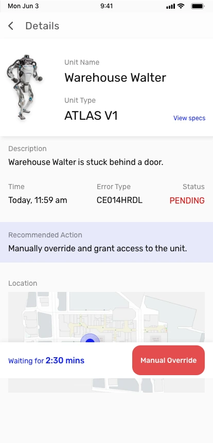
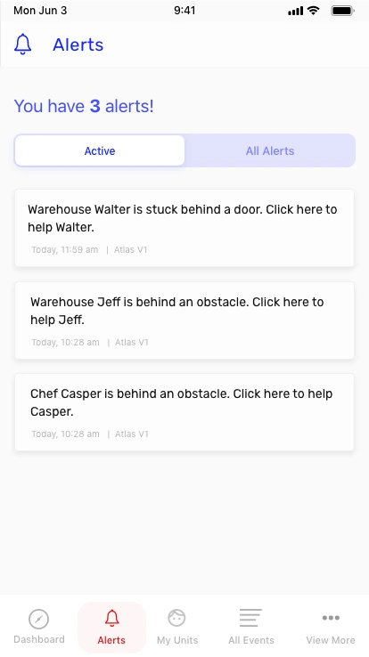
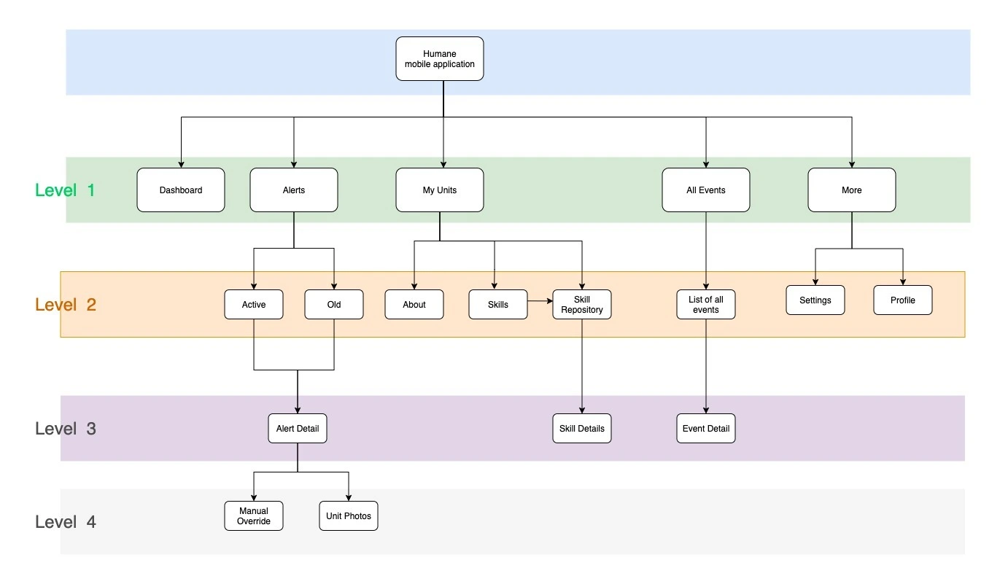
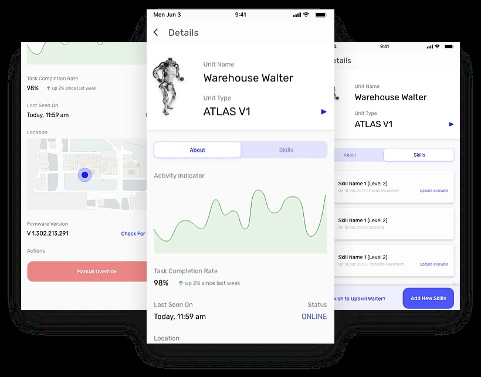
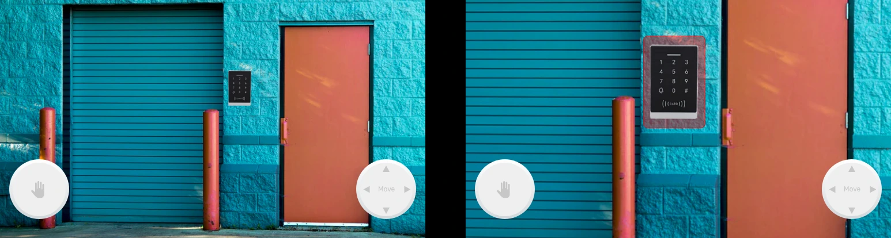
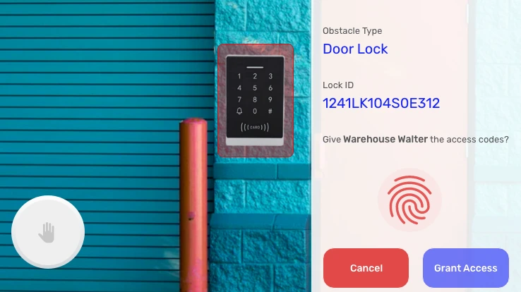
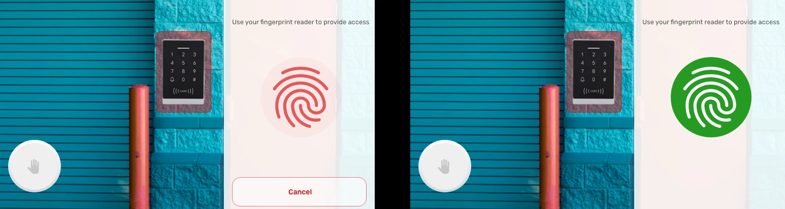
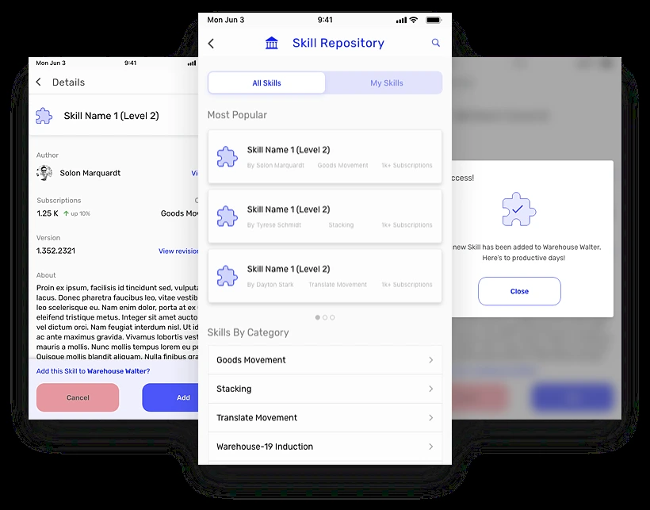
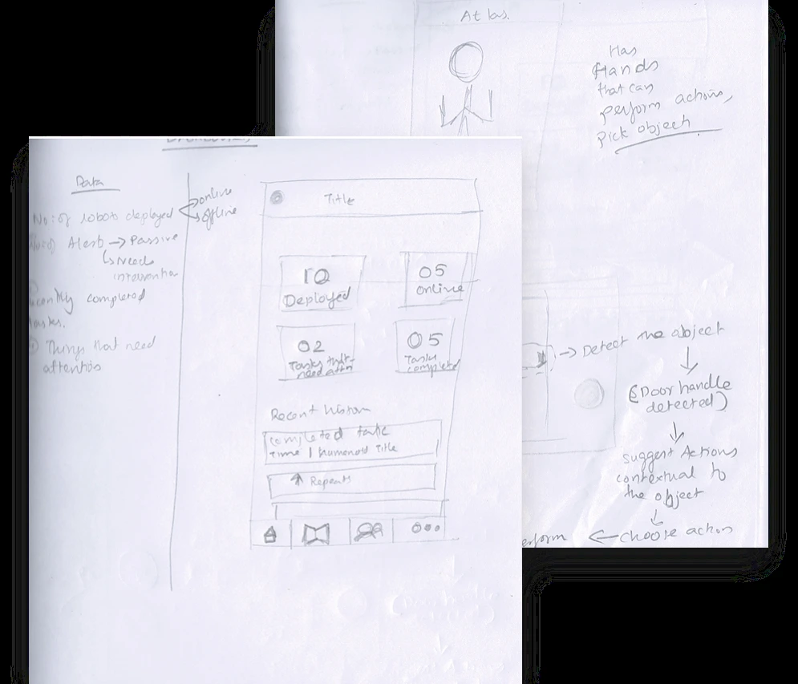
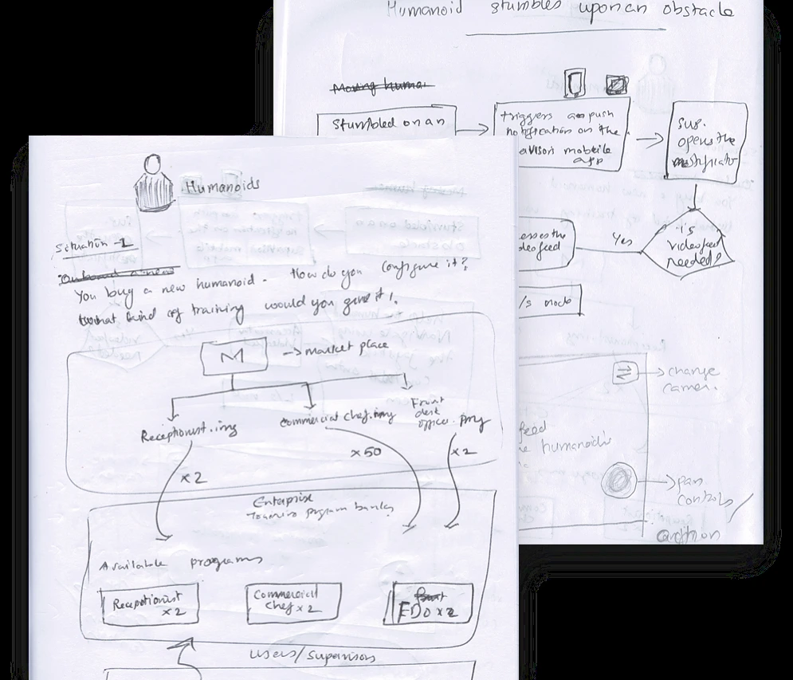

Humane.
Human judgment.
Robotic workforce.
A mobile companion for the people keeping humanoid robots at work. From a broad brief to two connected journeys in four days.
- CONTEXT
- Product Designer hiring exercise
- DURATION
- Four full days · 2020
- MY ROLE
- Concept to high-fidelity prototype
- TOOL
- Adobe XD
Understand.
Intervene.
Equip.
Two moments in a supervisor’s day.


Making an open-ended
brief concrete.
The brief called for a simple application that managers and staff could use to set up and manage humanoids, and respond to requests for assistance. It left the industry, operating context, and technical constraints largely open, while allowing documented assumptions.
I placed the concept within ACME Industries, a fictional organization using humanoids for activities such as warehouse work and reception duties. I focused on a supervisor managing assigned robots.
Help a robot overcome an obstacle through manual intervention, or add a capability through upskilling.
I believed these could be recurring supervisory tasks. That was a working assumption, not a finding from user research. Upskilling also drew inspiration from The Matrix: what might acquiring a new capability look like when the learner is a machine?
The responsibilities
behind the screens.
I established the product’s concepts before designing its interface. The model separated creating a capability from applying it to a robot.
- Units
- Individual humanoid robots assigned to a supervisor.
- Super admins
- Procure units, equip them with initial skills, and assign supervisors.
- Supervisors
- Manage assigned units, address daily obstacles, and add available skills.
- Skill authors
- Create or adapt capabilities for use within the organization.
Shift handovers and cross-organization skill sharing were outside the scope of the exercise.
A workspace organized around supervision
The dashboard brought together fleet status, critical alerts, and recent events. My Units provided a route into each robot’s activity, location, firmware, and installed skills.




A blocked robot.
A human decision.
“Warehouse Walter” encounters a locked door and cannot proceed. The supervisor opens an alert showing the affected unit, issue, event time, location, status, and recommended action. A waiting-time indicator makes the interruption visible.
After authenticating, the supervisor enters a landscape camera view with controls for inspecting the surroundings and moving the robot.
The concept assumes that the robot recognizes actionable objects and that the organization’s access-control system is connected. A supervisor with the appropriate clearance can select the lock and grant access.
Connect an alert to the context and action needed to address it, rather than leave the supervisor with an error message alone.







A new capability,
within reach.
From My Units, the supervisor selects a robot, reviews its existing skills, and opens “Add New Skills.” The organization’s repository lets them browse capabilities and inspect a skill before adding it.
The confirmation returns them to the unit’s skills list with the addition visible. Authorship, categories, versions, and available updates frame skills as modules that can be maintained over time.
Make adding a capability understandable to supervisors while keeping its creation and customization with technically skilled authors.
The prototype covers selection and confirmation. It does not detail compatibility checks, installation failures, or recovery. The screen content is illustrative prototype data.

From a system model
to something tangible.
I moved from the product model and supervisor scenario into information architecture and task flows, then sketched key screens before building the high-fidelity prototype in Adobe XD. The sketches served as the wireframes; I did not create a separate digital wireframe set.
The result was a connected prototype covering two supervisory tasks and the surrounding screens needed to make them understandable.
It took four full days and plenty of late nights. I’m proud of how much of an unfamiliar product space I was able to make tangible within that time.




What it established.
What remains open.
Humane shows how I approached an ambiguous brief: define the system, establish responsibilities, choose a manageable scope, and carry selected tasks through to an interface.
It remained a speculative concept. The persona, task frequency, technical capabilities, and operational context were assumptions. There was no formal user testing or production deployment, so the work does not establish usability improvements or business impact.
Questions I would investigate next
- Are these the right tasks to prioritize for supervisors?
- Does a locked-door request need direct remote control, or could a focused authorization flow suffice?
- How should the system handle lost connections, denied access, and a robot that remains blocked?
- What must a supervisor know before installing a capability on a working unit?
These are retrospective questions, not claims about research or alternatives explored during the original exercise.